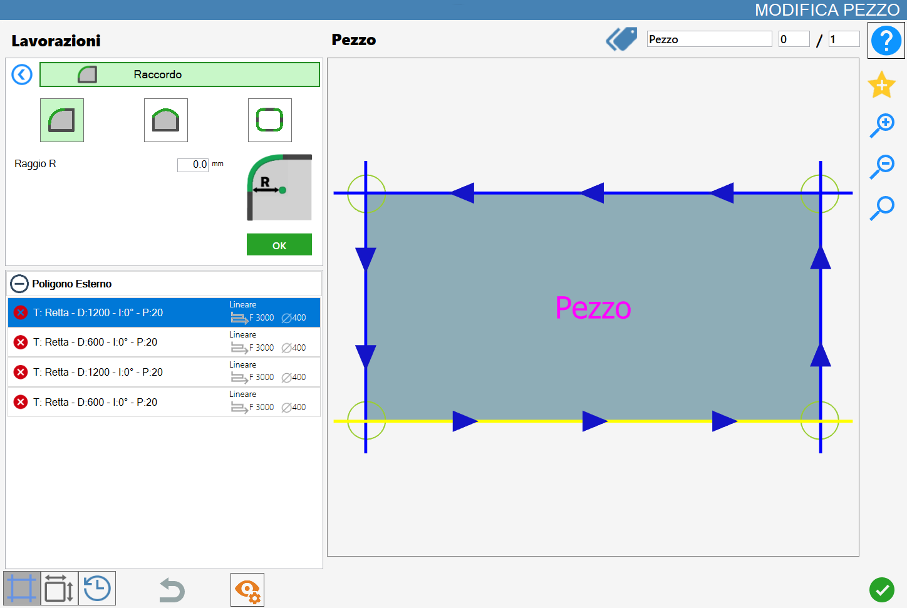
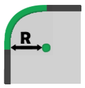

Questa funzionalità permette all’operatore di aggiungere un raccordo al vertice o al lato del pezzo.
L’interfaccia per questa funzione assomiglia alla seguente immagine:

Parametri
Le modalità ‘Vertice singolo', ‘Lato’ e 'Vertici del poligono’ sono mutuamente esclusive: l'attivazione di una esclude automaticamente le altre.
 | Vertice singolo |
Lato | |
Vertici del poligono |
Parametri per ‘Vertice singolo’ e ‘Vertici del poligono’
 | Raggio R |
Parametri ‘Lato’
 | Offset 0 |
Esecuzione della lavorazione
È possibile applicare la lavorazione premendo il pulsante a sinistra del taglio opportuno nella lista dei poligoni.
Un’icona rossa con una 'X' indica che la lavorazione non può essere applicata al taglio desiderato.
Di seguito è illustrata l'applicazione dei raccordi nelle diverse modalità. Un'anteprima della lavorazione consente all'operatore di visualizzare il risultato previsto. L'applicazione effettiva della lavorazione avverrà solo dopo la conferma mediante il pulsante verde 'OK'.
!
Ogni applicazione di un raccordo porterà a perdere tutte le impostazioni applicate in precedenza sui tagli del pezzo.
Esecuzione raccordo su vertice singolo
Selezionando questa modalità la lavorazione potrà essere eseguita sui singoli vertici del pezzo.
Affinché la lavorazione venga correttamente applicata non è possibile impostare una misura del parametro raggio negativa.
Nell'immagine di esempio seguente sono stati applicati tre raccordi con raggio di 100,0 mm.

Nella lista dei tagli a sinistra si verificano alcune conseguenze per ogni applicazione di un raccordo su vertice:
Se sono presenti altre lavorazioni, queste verranno rimosse.
Viene inserita una curva nella lista, il nuovo raccordo.
Vengono ridotte le lunghezze dei lati adiacenti al vertice selezionato della misura stabilita dal parametro Raggio.
Esecuzione raccordo su lato
Selezionando questa modalità, la lavorazione potrà essere eseguita sui lati del pezzo. Per quanto riguarda i raccordi in questa modalità, si presentano due casistiche principali in base al valore del parametro offset: un valore positivo e un valore negativo.
Nell'immagine di esempio seguente è stato applicato un raccordo al taglio inferiore del pezzo selezionato, con il parametro offset impostato a 100,0 mm.

L'immagine seguente mostra l'esempio opposto rispetto al caso precedente: è stato applicato un raccordo al taglio inferiore del pezzo selezionato, con il parametro offset impostato a un valore negativo di -100mm.

Nella lista dei tagli a sinistra si verificano alcune conseguenze per ogni applicazione di un raccordo su lato:
Se sono presenti altre lavorazioni, queste verranno rimosse.
Il taglio di tipo retta selezionato viene sostituito da un taglio curvo.
Con un valore positivo del parametro offset, il raccordo inserito sarà costituito da una curva rientrante rispetto al poligono selezionato, sia esso interno o esterno.
Al contrario, con un valore offset negativo, il raccordo applicato sarà costituito da una curva uscente rispetto al poligono selezionato.
Esecuzione raccordo sui vertici del poligono selezionato
Questa modalità permette di applicare tanti raccordi quanti sono i vertici del poligono selezionato.
Per far si che la lavorazione vada a buon fine non è possibile inserire una misura del raggio negativa.
Nella seguente immagine è mostrata la lavorazione su tutti i vertici del pezzo:

Analogamente alla modalità sui vertici singoli, utilizzando questa modalità nella lista dei tagli a sinistra si manifestano alcune conseguenze:
Se sono presenti altre lavorazioni, queste verranno rimosse.
Il taglio di tipo retta selezionato viene sostituito da un taglio curvo.
Con un valore positivo del parametro offset, il raccordo inserito sarà costituito da una curva rientrante rispetto al poligono selezionato, sia esso interno o esterno.
Al contrario, con un valore offset negativo, il raccordo applicato sarà costituito da una curva uscente rispetto al poligono selezionato.